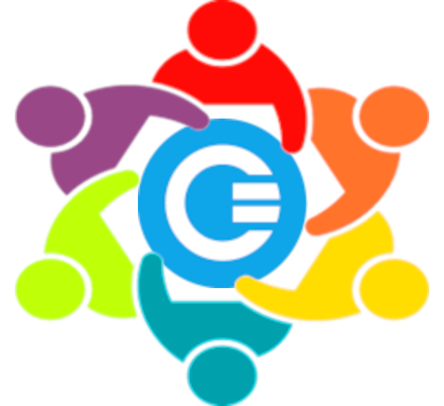
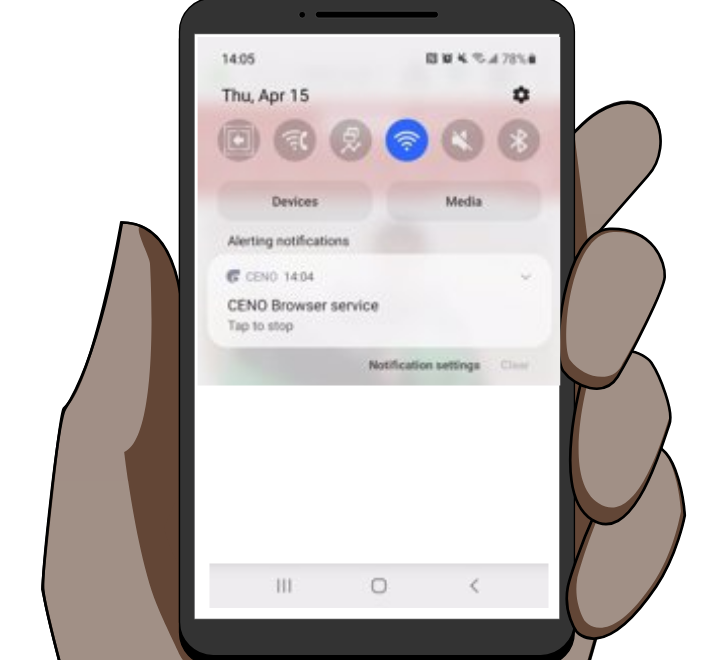
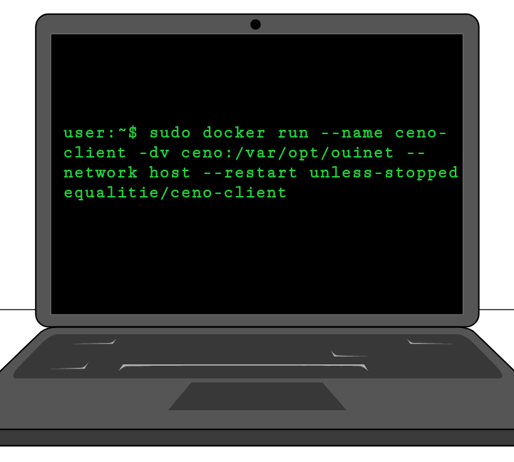
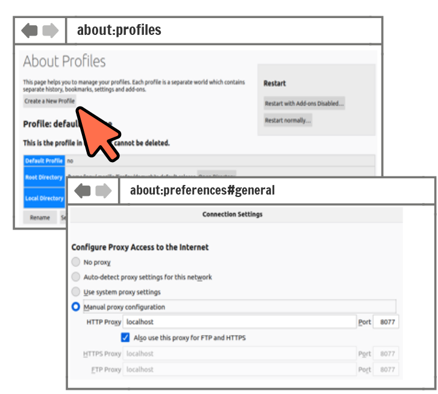
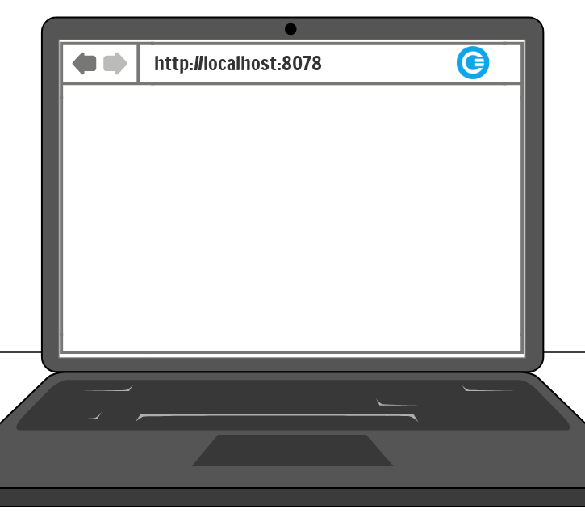

Get Involved!
We'd love your support in making Ceno Browser as useful and accessible as possible. Ceno is a completely Free/Libre/Open Source project, and there are many ways to contribute!
Tłumaczenia

Pomóż przetłumaczyć aplikację Przeglądarka Ceno, rozszerzenie, instrukcję obsługi oraz stronę internetową!
Skontaktuj się z zespołem Ceno poprzez formularz kontaktowy poniżej jeżeli jesteś zainteresowany zostaniem recenzentem dla tłumaczeń w twoim języku.
Więcej informacji o tym jak używać Weblate znajdziesz w dokumentacji Weblate.
User Research
Ceno relies on user feedback to understand the needs of our users and to suggest improvements and new features.
Sharing your story also helps spread the word about Ceno, which grows the network. With your consent, we may also highlight your story on our website!
We welcome reviews on the Play Store as well as direct communications - you can get in touch with the team via the feedback button at the bottom of this website, or send us an email:
cenoers [at] equalit [dot] ie
Kod źródłowy
If you are interested in Ceno's source code please check the following Git repositories:
- Browser components: package builder, Firefox fork, included extensions, settings extension source
- Źródło Ouinet
You may also be interested in the (no longer maintained) previous incarnation of Ceno, built on the Freenet anonymous file sharing and content publishing network. Other inactive project-related repositories can be found at the Censorship.no! archive.
Run a Bridge Node
Become a bridge!
Chcesz pomóc w rozwoju sieci? Dołącz do roju!
The easy way: Android
Najprostsza droga: Android. Uruchom przeglądarkę Ceno na Twoim urządzeniu Android i/lub na zapasowym, zawsze włączonym urządzeniu.
Run the Ceno Docker Client
Alternatively, with just one command you can set up a bridge on your computer or VPS: sudo docker run --name ceno-client -dv ceno:/var/opt/ouinet --network host --restart unless-stopped equalitie/ceno-client
Open a portal to the internet
Ensure UPnP is enabled on your router, or set up port forwarding.
To see if it's working:
Create and open a new Firefox Profile, and set the proxy to localhost, port 8077.
Thank you for growing the network!
DZIĘKUJEMY ZA DOŁĄCZENIE DO ROJU! Zainstaluj rozszerzenie Ceno oraz dostarczony certyfikat, aby go przetestować!